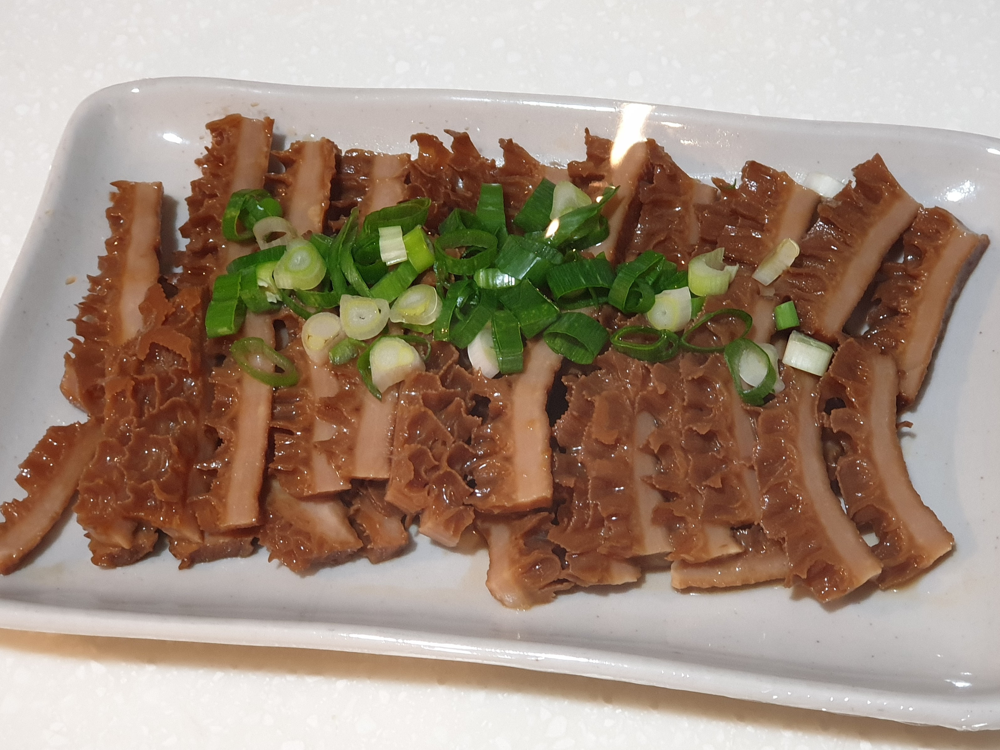
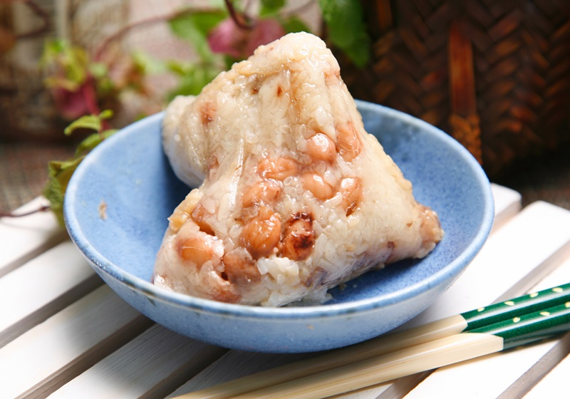

Hello! Welcome to my website.
This website would introduce some common Taiwanese cuisine, including its history and making process.
Please click the topic you are interested in at the top or bottom of the website and enjoy!
Taiwanese cuisine, or its native nickname "Taiwan Xiao-Chi", is considered as one of the special regional food in Asia. Generally, due to the colonization bt China and Japan, Taiwan Xiao-Chi is deeply influenced by these two countries. You may find out that many kinds of Taiwanese Xiao-Chi have some same features from Chinese and Japanese foods.
Contact me

